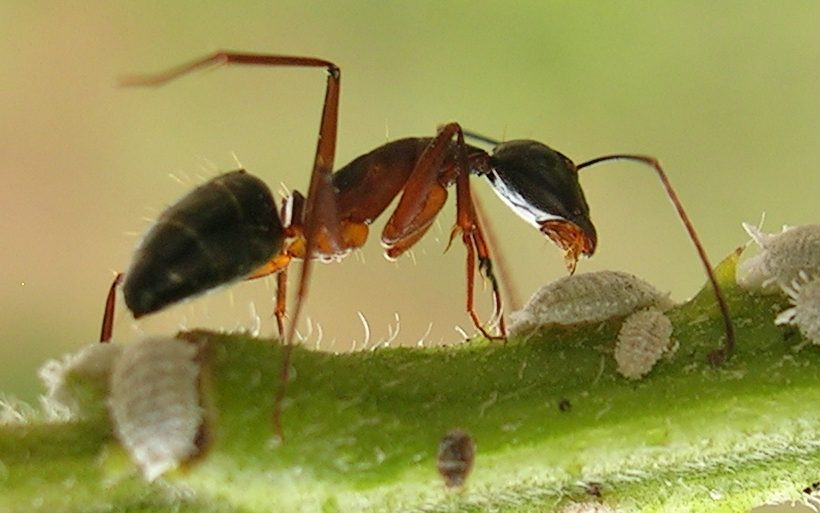

काला चींटाBlack Carpenter Ant
Camponotus compressus · Formicidae · INS-0088

- Scientific nameवैज्ञानिक नाम
- Camponotus compressus (Fabricius, 1787)
- Familyकुल
- Formicidae
- Hindiहिंदी
- काला चींटा
- Local namesस्थानीय नाम
- kala chinta, kala cheenta, bada chinta, carpenter ant
- Status hereयहाँ की स्थिति
- native
- Movementआवागमन
- Resident, here all year
- IUCNIUCN
- not evaluated
- Reviewसमीक्षा
- audited and independently read
When to look कब देखें
Present all year.साल भर मौजूद।
Uses and possibilities उपयोग और संभावनाएँ
Drawn from the documented uses in the profile below, where each is labelled traditional, current or a research lead. All uses →
काला चींटा / Black Carpenter Ant
Camponotus compressus (Fabricius, 1787) — Formicidae
काला चींटा — घर की लकड़ी में सुरंगें खोदने वाली बड़ी काली चींटी जो दिन और रात सक्रिय रहती है। घर की छत, दरवाज़े, खिड़कियों में पाई जाती है। रसोई या खाने के स्थान के पास बड़ी भीड़ में दिखती है। लकड़ी को खोखला कर देती है। गर्मियों में ज़्यादा फ़सल करती है, सर्दियों में निष्क्रिय।
Quick Identification त्वरित पहचान
| Feature | Description |
|---|---|
| Worker colour | Shiny black; some individuals may have a reddish tint |
| Size | Workers: 7–13 mm; major workers larger; queens up to 20 mm |
| Shape | Typical ant morphology; smooth, slightly flattened |
| Antennae | 12-segmented; clubbed |
| Mandibles | Large, powerful |
| Galleries | Smooth, clean tunnels in wood; sawdust-like frass outside |
| Worker activity | Trails between nest and foraging sites; nocturnal and diurnal |
| Damage | Wood appears hollowed but not crumbly; galleries may weaken structures |
Field tip: Look for carpenter ants on wooden structures at dawn and dusk when they are most active. You will see individual workers and trails. Check the wood for smooth galleries and fine, powdery frass (sawdust) ejected from the galleries. A nest inside a wooden beam can be detected by tapping and listening for a rustling sound.
हिंदी — कैसे पहचानें: बड़ी काली चींटी, शीशे जैसी चमकदार। लकड़ी में चिकनी सुरंगें, बारीक धूल जैसी फ़साद। सुबह-शाम सब से ज़्यादा दिखती है।
Morphology आकारिकी
Biometrics:
| Measurement | Range |
|---|---|
| Minor worker | 7–10 mm |
| Major worker (soldier) | 10–13 mm |
| Queen | 18–20 mm |
| Male | 8–10 mm |
| Egg | 0.5 mm |
| Larva | 1–4 mm, whitish |
| Pupa | 2–3 mm, pale |
Worker: Shiny black, smooth cuticle. Antennae 12-segmented, weakly clubbed. Mandibles are large and powerful. Eyes are present but small. The mesosoma (thorax) is continuous, without a distinct waist. The petiole (segment connecting thorax to abdomen) is a single node.
Queen: Larger, darker, with ocelli (simple eyes). Winged at emergence; loses wings after mating. The abdomen is swollen with eggs.
Male: Winged, dark, smaller than queen. Short-lived; functions only in mating.
Larva: Whitish, maggot-like, legless. Fed by workers; develops into a pupa within 3–4 weeks.
हिंदी: बड़ी, मजबूत चींटी, लंबे जबड़े। छोटी आँखें। काली, चमकदार। लार्वा सफ़ेद, बिना पैर।
Behaviour & Ecology व्यवहार और पारिस्थितिकता
Camponotus compressus is a wood-nesting species that excavates galleries in dead wood for shelter and brood-rearing. Colonies can be massive, numbering thousands to tens of thousands of workers. The ants do not eat the wood; they excavate it, creating smooth galleries where the colony lives. Workers forage at night and during the day (both diurnal and nocturnal), searching for food — insects, insect exudate, seeds, and plant material. They are generalist scavengers and predators. A single nest can occupy multiple galleries in the same beam or across connected wooden structures, leading to considerable weakening.
The colony establishes itself in dead wood, often in buildings, poles, and dead tree branches. Unlike termites, carpenter ants are not social and do not have a caste system beyond workers, soldiers, queens, and males. The species is relatively tolerant of desiccation and can persist in dry wood. Nuptial flights (when winged males and females mate) occur during pre-monsoon and monsoon months, but the primary colony growth occurs during warm months.
The ants have a mutualistic relationship with honeydew-producing insects (scale insects, mealybugs, aphids); workers may "farm" these insects for the honeydew they produce. This sometimes leads to ants dispersing pest insects unintentionally.
हिंदी: लकड़ी को खोद कर घर बनाती है, खाती नहीं। रात-दिन सक्रिय। बड़ी कॉलोनी, हज़ारों चींटियाँ। शहद माहूं इत्यादि से मीठा पदार्थ खाती है।
Life Cycle / Phenology जीवन चक्र
| Stage / season | Event |
|---|---|
| Egg, 12–15 days | Laid by queen in brood chamber |
| Larva, 18–25 days | Fed by workers; four instars |
| Pupa, 7–14 days | Inside pupal case; immobile |
| Worker emergence | Complete cycle: 35–50 days |
| Callow period | 1–2 weeks; new workers pale, inactive |
| Adult worker lifespan | 1–3 years or more |
| Queen lifespan | Up to 30 years in the colony |
| Nuptial flights | June–September during pre-monsoon and monsoon |
| Colony growth | April–October; fastest in warm months |
हिंदी: अंडे से कामगार तक 35–50 दिन। कामगार 1–3 साल जीते हैं। रानी 30 साल तक। गर्मी में तेज़ी से बढ़ता है।
Host Plants or Prey आहार
- Dead wood of any species — the nesting substrate, not food
- Food sources: insects and insect products (honeydew), plant exudates, seeds, stored food in houses, dead insects
Predators / Natural Enemies शत्रु
- Specialist ant predators: Camponotus predatory spiders, antlions
- Parasitoid flies: Pseudacteon (phorid flies) parasitise workers
- Entomopathogenic fungi: Beauveria, Metarhizium under high humidity
- Spiders: ground and web-building spiders hunt individual foragers
- Ants (other species): competitive exclusion by larger or more aggressive ant species
Agricultural / Human Relevance कृषि प्रासंगिकता
Structural pest. The carpenter ant is destructive to wooden buildings, furniture, and agricultural structures. Unlike termites, which consume the wood as food, carpenter ants excavate wood to create nesting galleries, leaving the wood structurally weakened. A colony can cause serious damage to a wooden house over several years. The ants are difficult to control once established because of the large colony size and the multiple galleries dispersed through the structure.
Today's management:
- Preventive measures: Keeping wood dry (moisture attracts the ants); treating wood with borate solutions; improving ventilation in wooden structures.
- Detection: Visual inspection for galleries and frass; listening for the rustling of worker activity inside the wood.
- Mechanical removal: Locating and destroying nests by drilling out the galleries and applying dusts or liquids directly into the nest.
- Chemical control: Boric acid baits are effective; the workers carry the bait back to the colony, poisoning it slowly. Insecticidal dusts in galleries.
Research direction (a lead, not a result). Ecology of wood-nesting ants in agricultural structures; non-toxic prevention using wood treatment and moisture management; chemical ecology of carpenter ant trail pheromones for monitoring.
हिंदी: लकड़ी को सूखा रखो। घर में हवा आने दो। दीमक नहीं, पर चींटी उतनी ही हानिकारक। बोरेक्स वाली आटी के दाने काम करते हैं।
Expected Locally स्थानीय रूप से अपेक्षित
Not a field record. Written from published accounts. The black carpenter ant is found in human structures throughout the Indian subcontinent.
अभी तक स्थानीय पुष्टि नहीं। यह विवरण प्रकाशित स्रोतों से है।
Expected in wooden structures (houses, farm buildings, pole storage) throughout Basti district, year-round, with highest activity in warm months. A sample of the ant with galleries or frass from the structure, with the location, would confirm a local record.
Distribution वितरण
Global range: Pantropical and warm temperate regions; found in all warm countries.
In India: Throughout the subcontinent; endemic in all regions.
In Uttar Pradesh: Common in all districts where wooden structures are common.
In Basti district / eastern UP: Expected in all wooden structures; frequency depends on building practices and wood moisture.
Research Questions शोध प्रश्न
Anyone can investigate these | कोई भी इन प्रश्नों की जाँच कर सकता है
- How large is a typical carpenter ant colony, and how many galleries can it maintain in a single wooden beam? / एक कॉलोनी में कितनी चींटियाँ होती हैं? — Excavate a colony; count workers and measure galleries.
- Which wood types are most preferred by carpenter ants? / कौन सी लकड़ी को सब से ज़्यादा नुकसान होता है? — Offer different wood species; monitor gallery formation.
- How long does it take for carpenter ants to establish a visible infestation in a new wooden structure? — Observe a new building; document first appearance.
- What is the most effective non-toxic method to prevent carpenter ant infestation in a wooden house? / कौन सी तरकीब से बचा जा सकता है? — Compare preventive treatments in parallel.
- Are carpenter ants more active at certain times of day or night in your area? / किस समय सब से ज़्यादा सक्रिय हैं? — Observe activity patterns hourly.
Similar Species मिलती-जुलती प्रजातियाँ
| Species | How to tell apart | हिंदी |
|---|---|---|
| Other Camponotus species (red/brown carpenter ants) | Different colour (reddish, brown); otherwise similar structure and behaviour | लाल या भूरी चींटी, यही काम |
| Termites | White to pale; soft-bodied; eat the wood, not just tunnel; soldiers have different morphology | दीमक, सफ़ेद, लकड़ी खाते हैं |
| Other wood-boring beetles | Much smaller; more destructive to wood quality; different gallery morphology | बीटल, ज़्यादा नुकसान |
Field rule: Large black shiny ants in galleries of wooden structures, with smooth tunnels and fine powdery frass, especially active at dawn and dusk: black carpenter ant.
Taxonomy & Classification वर्गीकरण
Original description. Described by Fabricius in 1787 in Mantissa Insectorum as Formica compressa from specimens collected in tropical regions. The genus Camponotus was erected by Mayr in 1861. Compressus refers to the compressed (flattened) body form.
Subspecies. No subspecies are currently recognised; however, populations in different regions show some morphological variation.
Family and order placement. Order Hymenoptera (ants, bees, wasps), family Formicidae (ants), subfamily Formicinae. The genus Camponotus comprises carpenter ants found worldwide.
Phylogenetic notes. Camponotus compressus is a derived species within the genus, specialised for wood-nesting. Related species prefer tree cavities or soil nesting.
IUCN status rationale. Not evaluated. As an abundant species, no conservation assessment is warranted.
Photo Gallery फोटो गैलरी
Photos needed आवश्यक फोटो
- [ ] Carpenter ant worker (चींटी ऊपर से)
- [ ] Gallery inside wood showing worker (सुरंग)
- [ ] Frass ejected from galleries (धूल और मलबा)
No photos yet — add field photos to media/species/carpenter_ant/ and run node scripts/sync_photos.js.
References संदर्भ
- Fabricius, J.C. (1787). Mantissa Insectorum, vol. 1. Hafniae. [original description, as Formica compressa]
- Mayr, G. (1861). Die Formiciden der Bernstein und die geognostisch-geologische Bedeutung derselben. Beiträge zur Naturkunde Preussens. [genus]
- Atwal, A.S. & Sandhu, G.S. (1971). Insect Pests of Crops and Their Control in India. Kalyani Publishers, New Delhi.
- Hölldobler, B. & Wilson, E.O. (1990). The Ants. Springer-Verlag, Berlin. [comprehensive reference on ant biology]
- Indian Council of Agricultural Research (2014). Household Pests and Their Management. ICAR–NCIPM, New Delhi.
- GBIF Occurrence Data — Camponotus compressus, India (2023).
Source file: species/fauna/insects/carpenter_ant.md